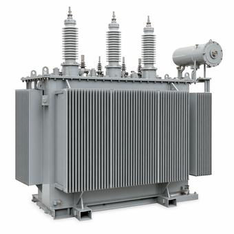

NEMA Enclosure Types: What the Number Guarantees
The numbers are not a ladder, nobody from NEMA tested the enclosure, and an IP code cannot be converted into a Type rating in the direction almost everyone converts it.

Key takeaways
- NEMA is a standards body, not a testing laboratory. It neither tests enclosures nor certifies them, so a Type rating may be the manufacturer’s own self-declaration.
- The numbers are not a hierarchy. Type 12 is indoor only; Type 3R, a lower number, is rated for outdoor use.
- A Type rating can be said to meet or exceed an IP code. An IP code can never be said to equal a Type rating, and NEC 110.28 states IP is not a substitute.
- The rating belongs to the installed assembly. One Type 1 fitting on a Type 4X enclosure makes the assembly Type 1.
On this page · 8 sections
What the number classifies
A NEMA Type number classifies an enclosure by the environmental conditions it is built to withstand: what solid objects and liquids it keeps out, whether it survives ice, whether it resists corrosion, and in some cases whether it resists oil or coolant. The requirements live in the ANSI/NEMA 250 standard, which covers construction, testing, rating and marking.
Two things about that classification are worth fixing in mind immediately, because almost every practical mistake follows from getting one of them wrong. First, the rating applies to the enclosure fully installed and ready for use — not to the box as it left the factory. Second, there are no standard sizes. NEMA 250 says nothing about dimensions; each manufacturer designs its own enclosures, and a Type rating applies just as readily to the housing of a finished product as to an empty cabinet.
Nobody from NEMA certifies it
This is the part the datasheets do not say, and NEMA states it plainly in its own published FAQ: NEMA is a Standards Development Organization, not a testing laboratory and not a Certification Body. It neither tests products nor certifies that a product complies with a NEMA standard.
So a manufacturer has two routes. It can self-certify that an enclosure meets the requirements of NEMA 250, which is entirely legitimate and explicitly permitted — anyone may label a complying product “NEMA 4X” or “NEMA 3R”. Or it can obtain third-party certification from a Certification Body, which in North America means listing to ANSI/UL 50E and CSA C22.2 No. 94.2 by an organisation such as UL, CSA or Intertek, with the ongoing factory surveillance that listing carries.
Both products say the same thing on the label. The difference is who stands behind it, and it is invisible unless you look for a certification mark alongside the type designation. One detail makes the distinction findable: NEMA’s own registered trademark may not be used in conjunction with a self-declared Type rating, because the NEMA mark is a trade-association mark and not a conformity assessment mark. A bare “NEMA 4X” in text is a self-declaration or a listing; a NEMA logo presented as though it certified the enclosure is neither.
Whether that matters is a procurement and inspection question rather than an engineering one. A customer specification or the authority having jurisdiction may require a Certification Body mark, and on a listed-equipment job it generally will.
The numbers are not a ladder
The single most common error is reading the sequence as increasing protection, so that a higher number is assumed to cover everything a lower one does. It does not work that way, and one pair settles it: Type 12 is an indoor rating and Type 3R is an outdoor rating. Twelve is the larger number and the less suitable choice for a wall outside.
What the families actually divide on is location and agent. Type 1 is basic indoor protection against incidental contact and falling dirt. Type 12 and 12K are the indoor industrial ratings, for circulating dust, falling dirt and dripping non-corrosive liquids. Type 13 adds resistance to oil and coolant spray, which is why it appears on machine tools. Type 5 addresses settling airborne dust indoors.
Outdoors, Type 3R covers rain, sleet and external ice formation; Type 3 adds windblown dust; Type 3S adds a mechanism that stays operable when the enclosure is ice-laden. Type 4 is rated indoor or outdoor and adds splashing water and hose-directed water. Types 6 and 6P address submersion, temporary and prolonged respectively.
Two suffixes carry most of the remaining meaning. X denotes additional corrosion resistance — 4X, 3RX, 3X, 3SX. K denotes knockouts. And the X suffix is where a widely repeated figure gets misread: it is sometimes claimed that Type 4X requires only a 200-hour salt-spray test while ordinary outdoor enclosures face 600 hours. The 200 hours is additional. All outdoor enclosures are subjected to 600 hours of salt spray and compared against a G90 galvanized steel specimen; the corrosion-resistant types then undergo a further 200 hours and are compared against a 304 stainless specimen. Type 4X is a longer test, not a shorter one.
Hazardous locations sit outside this set entirely. Types 7 and 9 are covered by ANSI/NEMA 250 but are not within the scope of UL 50E, so a hazardous-location enclosure is a different conversation with a different standard behind it.
IP codes do not map back
“NEMA 4 is IP66” is the shorthand everyone uses, and it is half right in a way that matters.
The conversion works in exactly one direction. A NEMA Type rating can be said to meet or exceed a given IP degree. An IP degree can never be said to equal a NEMA Type. NEMA says so in its own words, and the reason is scope: an IP code considers only the ingress of solid foreign objects and the ingress of water, while a NEMA Type also considers icing, corrosion resistance, lubricant resistance and construction details. There is nothing in an IP code that speaks to any of those, so no IP number can imply them.
There is a second difference that gets almost no attention. A NEMA Type rating requires the enclosure to be fully installed and ready for use. An IP degree may be assigned to an enclosure in a partially completed state of installation. Two ratings taken at different points in the lifecycle are not interchangeable even where the test parameters line up.
For work under the NEC this is not merely a technical nicety. NEC 110.28 states that IP ratings are not a substitute for enclosure Type ratings. An imported assembly carrying only an IP marking does not satisfy a Type requirement, whatever the correlation tables suggest, and that is a conversation to have with the AHJ before the equipment ships rather than after.
The rating belongs to the assembly
An enclosure arrives with a Type rating. What gets installed is an assembly: the enclosure plus every fitting, gland, conduit hub, window and vent added to it. The rating that governs is the assembly’s, and the rule is unforgiving.
Fittings are tested independently, to a Type rating equal to or better than the enclosure they go into. The assembly’s overall rating is then limited by the least severe rating of any component in it — the weakest link. A Type 4X stainless enclosure with one Type 1 fitting is a Type 1 assembly, and it is the fitting rather than the enclosure that decides. This is the most frequent way a correctly specified enclosure ends up non-compliant on site.
Two related marking details are worth knowing. An enclosure meeting more than one Type rating may be designated by a combination of numbers, the smaller number first. And a rating may carry a conditional restriction stated on the marking, of which the common form is a qualifier such as “Type 4X only when door closed”. A conditional rating is a real rating; it is also a real condition, and an enclosure propped open for ventilation is not operating at its marked Type.
Mounting is the other field variable. NEMA 250 requires a mounting means external to the electrical cavity for a number of Type-rated enclosures unless an intermediate bracket or foot is used — so drilling through the back of the cavity and sealing the holes with silicone is not a route to keeping the rating. The final installation is subject to the AHJ in any case.
What the rating does not cover
A Type rating is about the environment outside the enclosure getting in. It says nothing about what happens when the energy inside gets out.
NEMA 250 does not address arc flash, and there is no test in it that rates an enclosure’s resistance to arcing-fault energy. An enclosure is not arc-rated because it is Type 4X, and a Type number on a door is not a basis for any decision about personal protective equipment. That subject belongs to NFPA 70E, which governs the PPE and work practices, and for switchgear specifically to IEEE C37.20.7, which is the guide for testing equipment against internal arcing faults. Arc-resistant switchgear is a separate construction and a separate rating.
The rating also says nothing about ingress protection ratings for personnel contact beyond the basic incidental-contact provision, about seismic qualification, about thermal performance, or about security. Each of those is specified separately, and each has been assumed to come free with a high Type number at some point.
Common mistakes
Specifying Type 12 for an outdoor location because the number is higher than 3R. Treating an IP marking as satisfying a Type requirement, which NEC 110.28 rules out. Reading the 200-hour salt-spray figure for Type 4X as the whole test rather than an addition to the 600 hours. Accepting a bare “NEMA 4X” on a datasheet where the specification or the AHJ wants a Certification Body mark. Installing a lower-rated fitting into a higher-rated enclosure and keeping the enclosure’s number on the drawing. Ignoring a conditional qualifier such as “only when door closed”. Drilling mounting holes through the electrical cavity and sealing them with silicone. Assuming any Type rating implies arc resistance.
Frequently asked questions
Is NEMA 4X the same as IP66?
No, and the relationship only runs one way. A NEMA Type rating can be said to meet or exceed an IP degree, but an IP degree can never be said to equal a NEMA Type. An IP code covers only solid-object and water ingress, while a NEMA Type also covers icing, corrosion resistance, lubricant resistance and construction details. NEC 110.28 states that IP ratings are not a substitute for enclosure Type ratings.
Who certifies a NEMA enclosure rating?
Not NEMA. It is a Standards Development Organization, not a testing laboratory or Certification Body, and it neither tests enclosures nor certifies compliance. A manufacturer may self-certify to NEMA 250, which is legitimate and explicitly permitted, or obtain third-party listing to UL 50E and CSA C22.2 No. 94.2 from a Certification Body. Both products carry the same type designation, so look for a certification mark if the specification or the AHJ requires one.
Can a NEMA 12 enclosure be used outdoors?
No. Type 12 is an indoor rating, for circulating dust, falling dirt and dripping non-corrosive liquids. Type 3R, despite the lower number, is the outdoor rating for rain, sleet and external ice. The Type numbers are not a hierarchy, and this pair is the clearest demonstration of it.
Does a NEMA enclosure rating protect against arc flash?
No. NEMA 250 does not address arc flash and contains no test rating an enclosure against arcing-fault energy, so no Type number implies arc resistance. PPE and work practices are governed by NFPA 70E, and arc-resistant switchgear is tested to IEEE C37.20.7 as a separate construction with a separate rating.
Next steps
The arcing-fault hazard a Type rating says nothing about is covered in arc-flash boundary basics, and the equipment constructions themselves in metal-clad vs. metal-enclosed switchgear.
Run the numbers
- Arc Flash CalculatorThe incident energy a Type rating has no bearing on.
Cite or link to this guide
Free to quote with attribution. Suggested citation: Voltfield Editorial Team, “NEMA Enclosure Types: What the Number Guarantees” Voltfield, updated September 29, 2026. https://voltfield.org/guide-grid-forming-vs-grid-following.html
Get new guides by email
One short email when a new guide or calculator is published, at most once a month. Your address is used for nothing else.